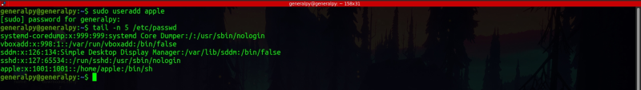
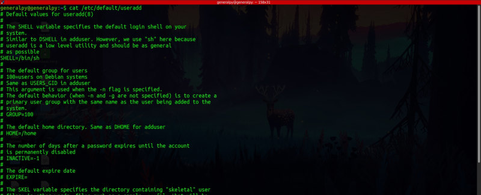
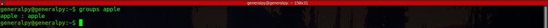
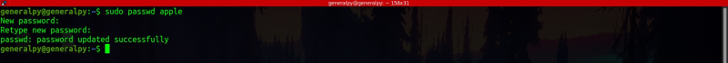
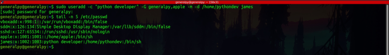
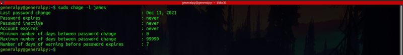
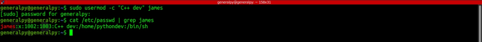
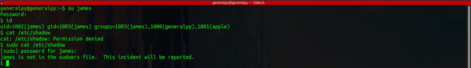
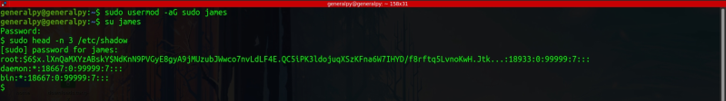

In linux we need root privileges to add,update or delete users.
useradd command is used to add a new user.
sudo useradd user_name
Useradd command without any flags create a user with default options which are specified in /etc/default/useradd file.

By default for new user group with same name is created.

Default options for useradd ,may differ from distro to distro.
Note that useradd also reads the /etc/login.defs file which create instructions for shadow file like password expiration policy, allowed range of passwords etc.
To be able to login as new user we have to assign that account a password.
To assign or edit a password, we can run passwd command with name of user as argument.

If we provide no options to useradd command, user's home directory is not created in /home/.
User -m option to create user's home directory. This will create home directory for user with same name as username in /home directory. We can create home directory in different location by using -d flag.
To add comment in /etc/passwd user -c option.
To use a different shell user -s option followed by absolute path of that shell. This shell is then launched when user logs in or opens a terminal.
By default, user is added into primary group with name same as username. To change this use -g option followed by group name, but this practice is not so common. To add user into other groups use -G flag followed by comma seprarated group names.

To create a temporary user, we can set its expiration date with -e flag followed by date in format yyyy-mm-dd.
To change or display password expire policy of a user, use chage command .
To display password expiration policy add -l flag to chage command.

If a user has shell /usr/bin/nologin or /bin/false, then it means that it is a user which is only created to run a specific service or process. In linux, services such as web servers are recommended to run with their own accounts in which they cannot login to provide security. nologin shell displays that this user account doesn't exist while false is just a binary which exits returning false.
There is another command adduser which is actually a perl script which uses useradd at backend but is easy to use. There is no difference between functionality of both commands.
~~~~~~~~~~~~~~~~~~~~~~~~~~~~~~~~~~~~~~~~~~~~~~~~~~~~~~~~~~~~~~
The commands which deal with user management are only modifying some special files like /etc/passwd, /etc/shadow etc.
usermod command is used to change a user's properties. It uses same options as useradd.

-g flag can be used to change user's primary group. -G can be used to change secondary groups of user. When changing user's secondary groups, user is automatically removed from group names not specified. For example we wriite below command :
usermod -G root,appple james
Let us assume james is member of admin and manager group already. But if we write above command, james will be removed from those group automatically until we specify admin and manager groups above. To get rid of this behaviour we have to use -a flag.
usermod -aG root,appple james
To delete a user use userdel command. By default, userdel only removes user and doesn't removes it's primary group, home directory etc. To remove those, use -r flag with usedel.
Note that userdel doesn't delete file associated with user in other locations, we have to manually search and delete those files.
Like adduser there is also an deluser command which is used to delete user with userdel as backend but with good interface.
In Linux only user which was created at the beginning can user adminsitrative commands when prefixed with sudo keyword.
Let's see an example. We have james user we created earlier. He has no admin rights. Let's log into his account and check if he can run admin command.

We can see that we cannot use james's account to read /etc/shadow.
To give admin rights to a user, we have to add it into sudo group in debian based distros and wheel group in cent os.

We added james to sudo group and now it can perform admin tasks.